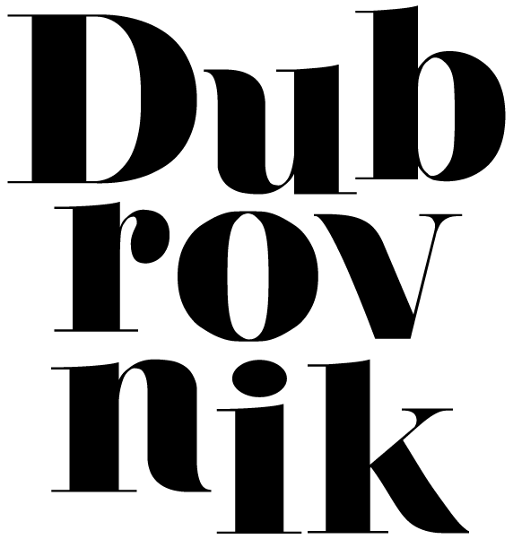

Dubrovnik, a stunningly beautiful, ancient coastal city, can no doubt feel like a touristy postcard. It’s not its fault - the Adriatic coastline is simply otherworldly, and all the Game of Thrones associations have done their job. The old city in Dubrovnik is small, making it hard to avoid cruise ship tourists and other visitors - but get up go early in the morning or linger at dusk, and you'll have more space to wander. It’s not hard to find quiet places away from people-packed center of Dubrovnik, and other nearby towns like Milni are less frequented by tourists, easily reachable by water taxi. There, small taverns and pristine sites generate some serious magic.
And if you have a chance, visit, for the sake of comparison, Zagreb as well. That’s where we started, at the highly untouristy university city. We spent time exploring the old city, eating at open air markets, relaxing in cafes and checking out the art scene. It felt everyday, relaxed - and looking back, it made Dubrovnik feel even more euphoric.
Located in the old center of Cavtat, this is a Dalmatian restaurant, serving the flavors of the Adriatic region. Waterfront sitting is a must, and so is the fresh seafood.
A chic, modern Mediterranean restaurant turning local ingredients into international delicacies. Asian-inspired dishes, such as the crispy shredded duck, are worth the wait.
Sushi in a historic location? This Dubrovnik restaurant makes it possible, serving creative rolls against the backdrop of peeling walls and mood lighting.
Built in 2015, the pristine hotel is a modern and relaxing getaway nicely complementing Dubrovnik’s romantic, historic vibe. Sea view rooms are a hot ticket.
An atmospheric hotel in a large 16th century villa, a charming courtyard included.
This charming boutique destination combines a shabby-chic historic building with contemporary design touches.
A big, modern hotel with excellent city views and a central location.
Dating all the way back to 1492, the arboretum developed out of a park surrounding the summer residence of the Gučetić-Gozze family. A photogenic and lush retreat.
A great historic spot to experience the traditional production of olive oil, and to taste local food and rakia.
Located halfway between Dubrovnik and Cavtat, Mlini is a peaceful retreat back in time, with a new boutique hotel and charming taverns